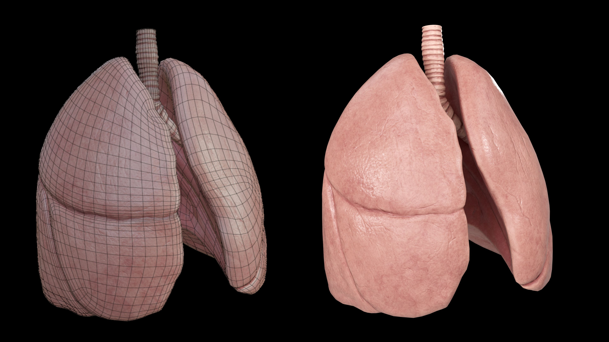
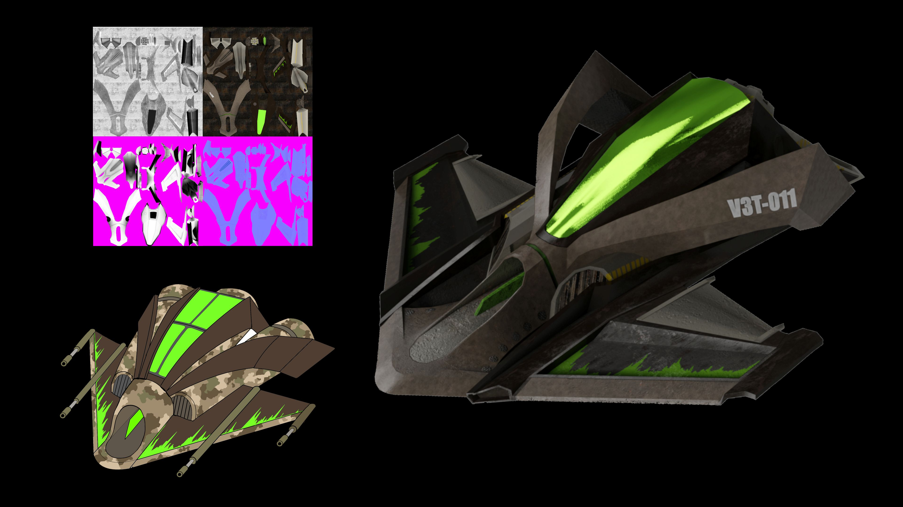
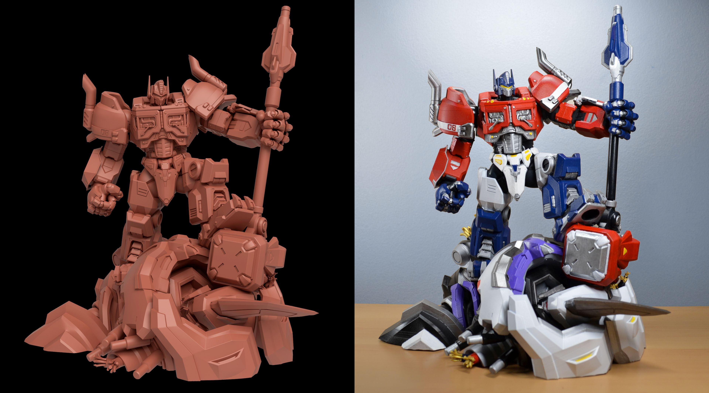
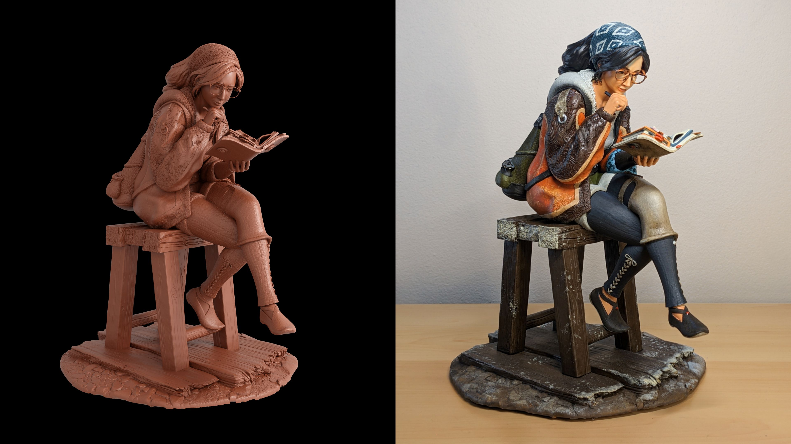
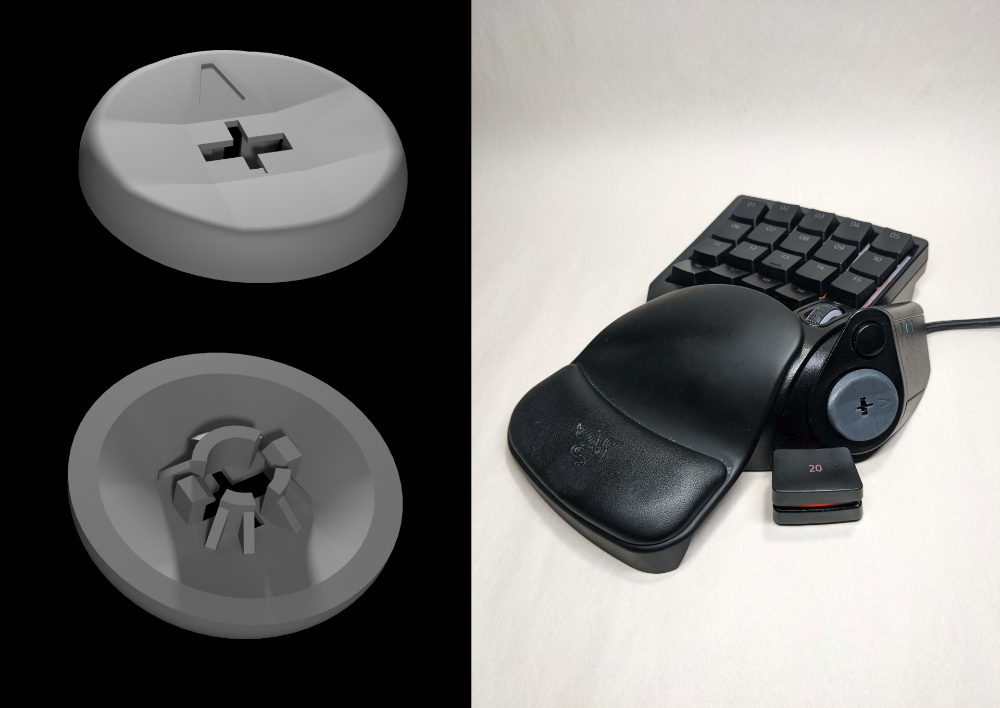
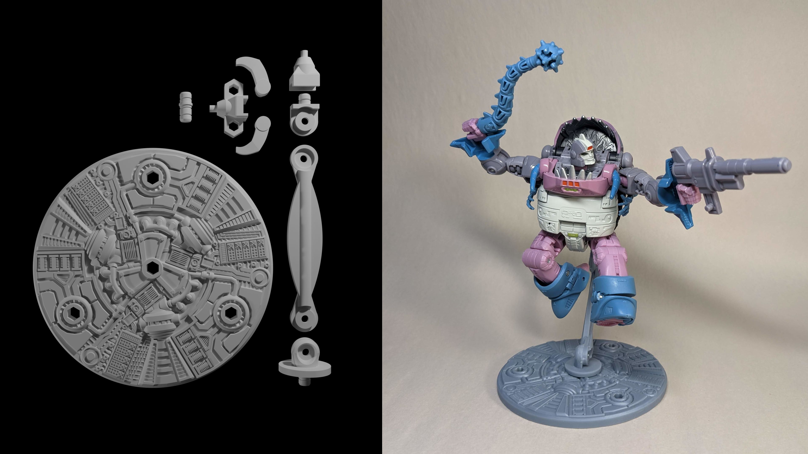
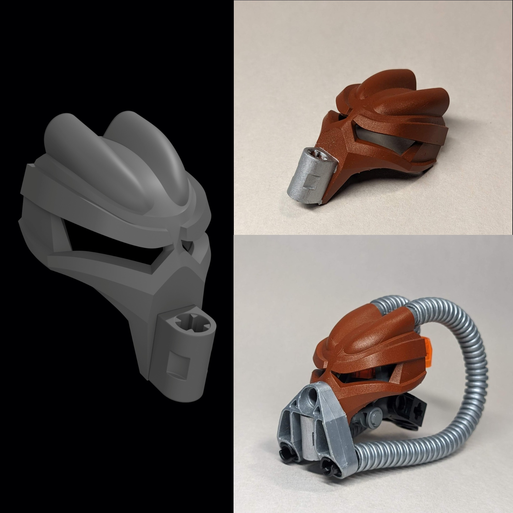
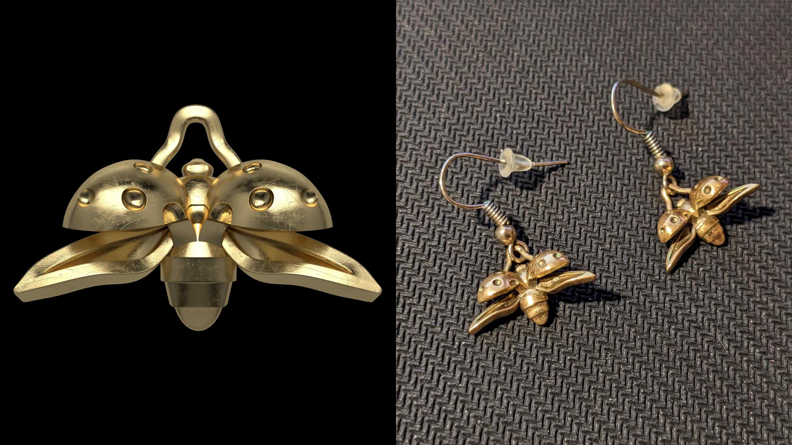
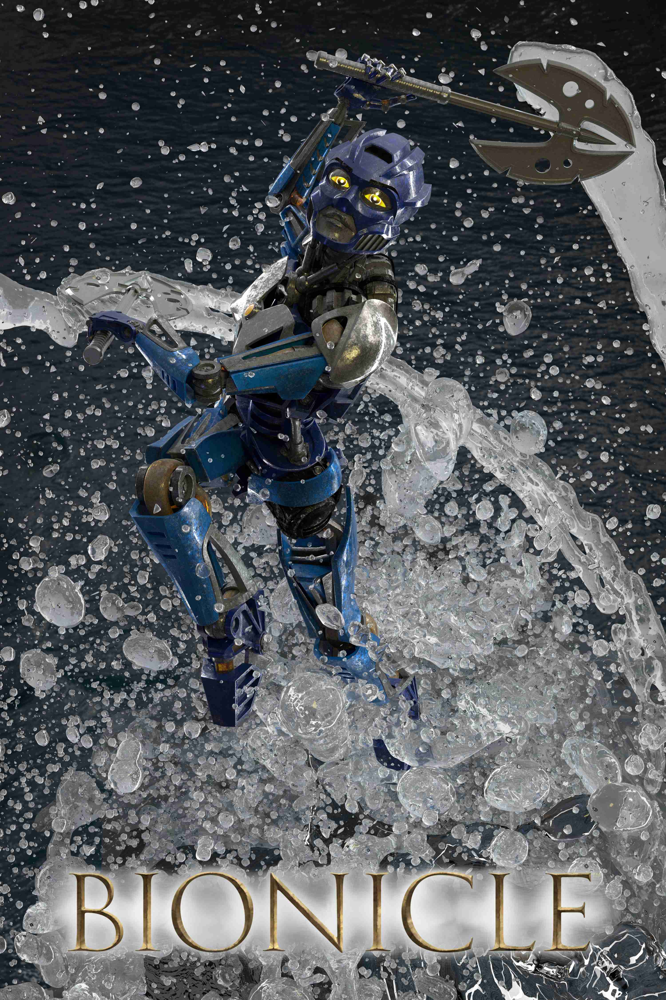
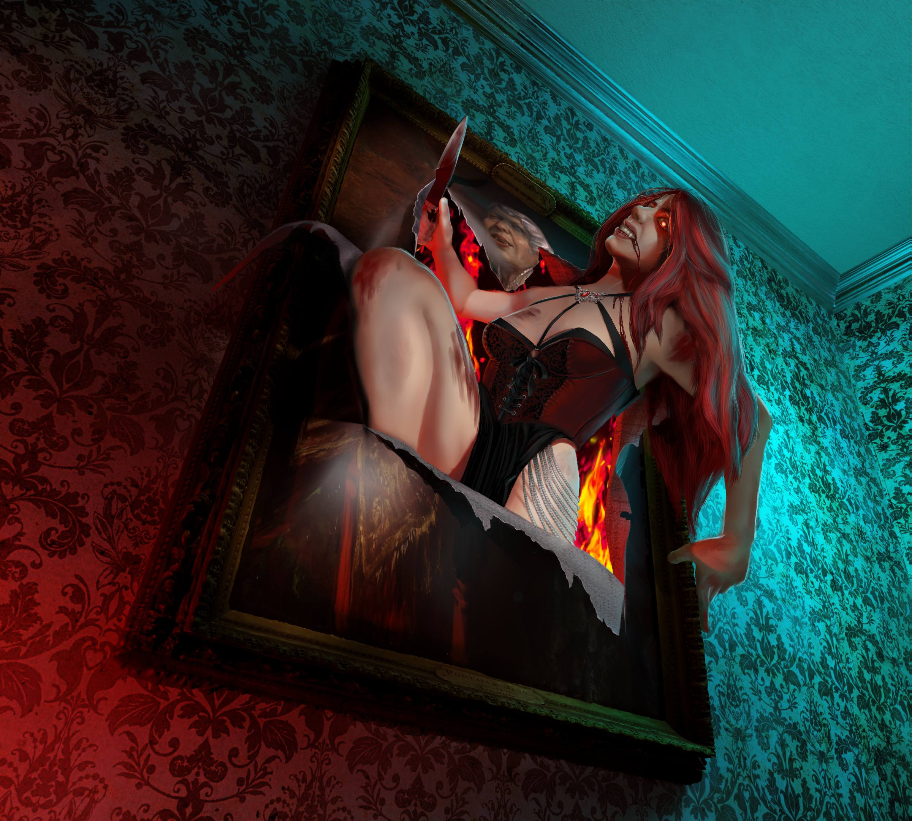

Technical Artist — 3D Modeling, Game Assets, Character Art
A strong foundation in the full asset creation pipeline — from concept and modeling through to texturing, baking, and engine integration — applicable across any genre or art style.


Game-ready asset creation is about more than modeling — it requires a full understanding of the pipeline from concept to engine, and the judgment to know how much detail is appropriate for a given use case. These two projects demonstrate both ends of that spectrum.
The first is a highly detailed, realistic model of human lungs built across three applications. The base mesh and UV maps were created in Blender, the overall form and high-resolution surface detail were sculpted in ZBrush, and the final materials were created in Substance Painter — including baking the high-poly detail down to a game-optimized low-poly mesh. The finished asset imports cleanly into Unity, Unreal Engine, or any other major game engine. The wireframe shown alongside the final render demonstrates the full pipeline from topology to textured and lit render.
The second is a low-fidelity spaceship designed for mass deployment — spawned in large quantities where each instance occupies a small portion of the screen. Here the priority shifted from surface detail to silhouette clarity and polygon efficiency. The design process began with a hand-drawn concept sketch, which was used as a reference throughout modeling. The final image shows the concept, material maps, and in-engine render side by side — a complete picture of the asset creation process from first idea to finished product.
Together these two assets reflect an understanding that quality in game development is not about maximum detail — it's about the right detail for the right context.
A rigorous foundation in precision modeling, manufacturing constraints, and design for fabrication — skills that translate directly into any context where geometry needs to do more than just look good.

This large resin 3D printed statue of a robotic character is a showcase of hard surface modeling fundamentals. With 19 interlocking parts and a highly mechanical design, the project demanded clean topology and a disciplined subdivision surface workflow — every edge loop placed with intention so that curves and creases behave predictably at any subdivision level.
The skills demonstrated here extend well beyond figurines. The same principles that make this robot's armor panels and joints read clearly at print scale are directly applicable to product visualization, industrial design, and medical device renders — any context where precise, manufacturable geometry and clean silhouettes are non-negotiable.
One of the more technically demanding aspects of the project was managing a large stack of boolean modifiers in Blender to split the model into printable parts. Booleans at this scale can quickly destabilize a scene, so a careful, non-destructive workflow was essential to keep the system stable and the geometry clean throughout the process.

This character statue pushed the boundaries of what's possible with consumer resin printing. Modeled in Blender and refined in ZBrush, the piece presented a unique challenge in balancing organic form with intricate surface detail.
Due to the nature of 3D printing all surface detail must use real geometry, rather than faked detail such as normal maps. Examples of this include the jacket, which features a complex mural-like pattern that was digitally hand painted and applied as a height map. Another example is the scarf, whose height map was derived entirely from real geometry — individual strands were modeled and arrayed into fabric, with the depth channel rendered out and converted into a tileable texture. This geometry-first approach to texture creation ensures the surface detail holds up at any scale.
To make the model printable on an Elegoo Saturn S, the character was split into 15 interlocking parts in Chitubox, with supports placed deliberately to avoid leaving marks on any visible surface — a process that requires both technical foresight and a deep understanding of how resin printing behaves. The result is a seamless, paintable figure that bridges the gap between digital art and physical fabrication.



Functional parts demand a different mindset than artistic models — every dimension has a purpose, and a beautiful model that doesn't fit is a failed model. These three projects demonstrate a methodical approach to design for manufacturing, where aesthetics and precision engineering go hand in hand.
The first is a custom D-pad attachment designed to snap onto a Razer keypad. Deceptively simple in appearance, this kind of part requires exact tolerances to achieve a fit that is secure without being permanent — too tight and it won't seat, too loose and it rattles.
The second is a fully articulated figure stand with an adjustable arm and swappable adapters. The joints were designed around specific nuts and screws, with geometry carefully calculated to control the friction at each connection point — tight enough to hold small figures in dynamic action poses under their own weight, but smooth enough to reposition with ease. This project required a deep understanding of how printed parts behave under sustained mechanical stress.
The third is a custom Lego-compatible part featuring smooth organic arches and curves that integrate cleanly with complex pre-existing Lego geometry. Achieving the correct connection point friction on Lego-compatible parts is notoriously demanding — the tolerances are tight and unforgiving — while simultaneously maintaining the flowing aesthetic of the design.
Together these projects reflect skills that translate directly into professional contexts such as device enclosures, jigs and fixtures, prototype components, and any product where fit, friction, and function are as important as form.

Jewelry presents some of the most demanding tolerances in 3D printing — fine details must survive both the printing process and the transition to metal through lost-wax casting. These earrings were designed and modeled with the casting process in mind from the start, accounting for metal shrinkage and the structural requirements of a wearable piece. The resin print served as the wax model, which was then handed off for professional casting. The result is a pair of finished metal earrings that began entirely as a digital model.
Character work that draws on a broad technical foundation — rigging, simulation, materials, lighting, and the ability to combine 2D and 3D workflows where each serves the image best.

This poster-style render is a showcase of what a fully realized character pipeline looks like from modeling to final render. The robotic warrior features a production-quality rig built with animators in mind — inverse kinematics on all major limbs, custom bone shapes that communicate their function at a glance, and carefully considered constraints that keep mechanical parts from intersecting during movement. Secondary motion is largely automated, so the character behaves predictably and realistically without requiring manual correction on every pose.
Perhaps the most technically demanding aspect of the rig is the character's transparent mechanical musculature. These elements deform automatically and correctly as the character moves, driven by shape keys tied directly to bone positions — a technique that keeps the geometry clean while preserving the illusion of underlying mechanical anatomy.
Perhaps the most technically demanding aspect of the rig is the character's transparent mechanical musculature. These elements deform automatically and correctly as the character moves, driven by shape keys tied directly to bone positions — a technique that keeps the geometry clean while preserving the illusion of underlying mechanical anatomy.
The final render brings the character to life through a combination of a liquid simulation for the water burst effect, deliberate lighting choices, and materials tuned for strong light response. The result is a dynamic, cinematic image that demonstrates not just modeling and rigging ability, but an understanding of how to present a character compellingly — a skill as valuable in a portfolio as it is on a production team.

This mixed media portrait demonstrates a deliberate intersection of 3D and 2D workflows. The environment — an eerily lit room with an otherworldly scene as the focal point — was fully modeled, textured, and lit in Blender, with the dramatic red and blue contrast established at the lighting stage to set the mood before a single brush stroke was placed. The character was then painted digitally in Krita directly onto the rendered background, blending seamlessly with the 3D environment.
The piece was designed from the outset as card art, which shaped every creative decision. At card scale, fine detail is lost — so the emphasis was placed on strong composition, a dynamic camera angle, and lighting that reads immediately and forcefully at a distance. The result is an image that leads with impact, even at a small scale.
This project reflects a practical approach to tool selection — the background called for the precision and control of a 3D pipeline, while the character called for the speed and expressiveness of digital painting. Using the right tool for each element of the same image is a habit that carries over into any production environment.
I'm a Technical Artist and Computer Science graduate from the University of Minnesota Twin Cities with a lifelong passion for 3D art that started long before it became a career goal. What drives me is the intersection of systems and aesthetics — designing the technical architecture alongside the visual components until something feels right and responds intuitively to the people using it.
My professional background as a firmware engineer at Seagate Technology and a systems verification engineer at Starkey Hearing Technologies has given me a deep appreciation for polish, quality, and the kind of rigorous thinking that separates a good product from a great one. I bring that same standard to my art.
I'm particularly passionate about virtual reality and XR, and am drawn to applications beyond traditional gaming — social, educational, and productivity experiences where the design of a system and the feel of its interface are inseparable. My digital art work to date has been freelance and personal, and I'm eager to bring these skills to a dedicated team.
I'm based in Minnesota and open to remote or hybrid opportunities.